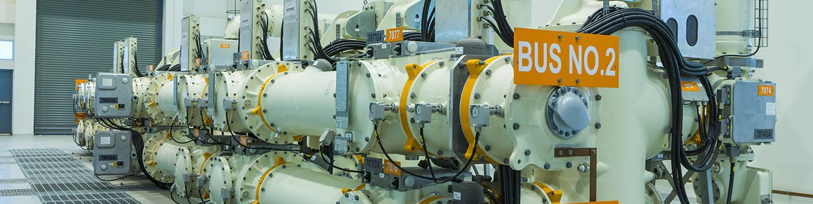

Three decades of software, consulting and GIS for power utilities.
GECE is a technology, consulting and innovation firm serving energy enterprises in government and non-government sectors. Since 1995 we have measured our success by the results of our software products and consulting services.
A firm built around the realities of running a power utility.
Our team includes electrical engineers, software experts, financial experts, quality assurance specialists, regulatory and reform specialists and research scientists.
Our approach to problem solving, through our technology solutions, has helped many utilities measure and manage risk and accomplish their stated objectives. We help our clients make lasting improvements to their performance.
More about GECE
Three streams of business, one utility focus.
GECE delivers software solutions and IT services, consulting services and GIS services. Together with its clients, GECE works towards clear competitive advantage and long-term enterprise value.
Software products and IT services
A suite of POWER workstations available off the shelf, combined and customised into complete solutions.
All IT services →Consultancy services
Advice across utility operations, infrastructure projects, IT plans, implementations and training.
All consultancy services →GIS services
End-to-end GIS, from identifying your needs to integrating with other technical and enterprise solutions.
All GIS services →Products for every part of the utility value chain.
GECE’s POWER workstations are designed and developed to take the risk out of technological change and realise the long-term benefits of future-safe technology. Choose an area to see the products that serve it.
Network & GIS
Map the network, study it and plan how it should grow.
Assets & projects
Know every asset, maintain it and manage the projects that add to it.
Metering, billing & audit
Read meters, bill and collect, and account for every unit of energy.
Customer service
From a new connection request to a restored supply.
Grid operations
Run the distribution and transmission system in real time.
Field mobility
Mobile applications that carry the workstations to the field.
Work that set the pattern for utility mapping and automation in India.
GPS mapping of an electrical utility in India
The first electrical utility mapping assignment in India using GPS technology was executed by GECE.
Total Station land-based mapping for a utility
GECE carried out the first land-based mapping for an electrical utility using Total Station equipment.
Distribution automation project in India
GECE implemented the first DA project in India, integrating SCADA with GIS and asset management systems for Hyderabad city.
GIS and mapping projects across India, the Middle East and Africa.
Select a region to see the mapping work recorded in GECE’s project history.
- Hyderabad
The entire city - 34 towns
Telangana - 29 towns
Andhra Pradesh - 21 towns
Gujarat, including Umreth - 3 districts
Hyderabad Karnataka region - Nehru Place
New Delhi - Patna
Patna city - Doddaballapur
Karnataka - Jaipur, Chennai, Jabalpur
Enterprise GIS databases
- 451 towns
GPS mapping in West Africa - 2 regions
In a West African country - Data migration
For a utility in West Africa - Data model
For T&D computerisation in West Africa
- 4 regions
GPS mapping in an East African country - City base map
For a utility in East Africa - Data conversion
For a large utility in East Africa
- 168 km
Survey of a 400 kV double-circuit line - Power evacuation
Transmission design studies for new generation